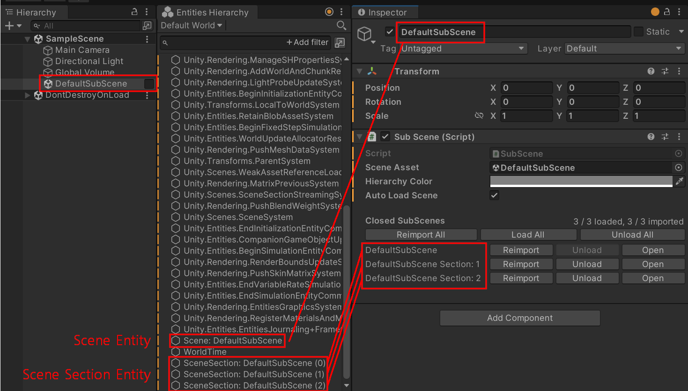
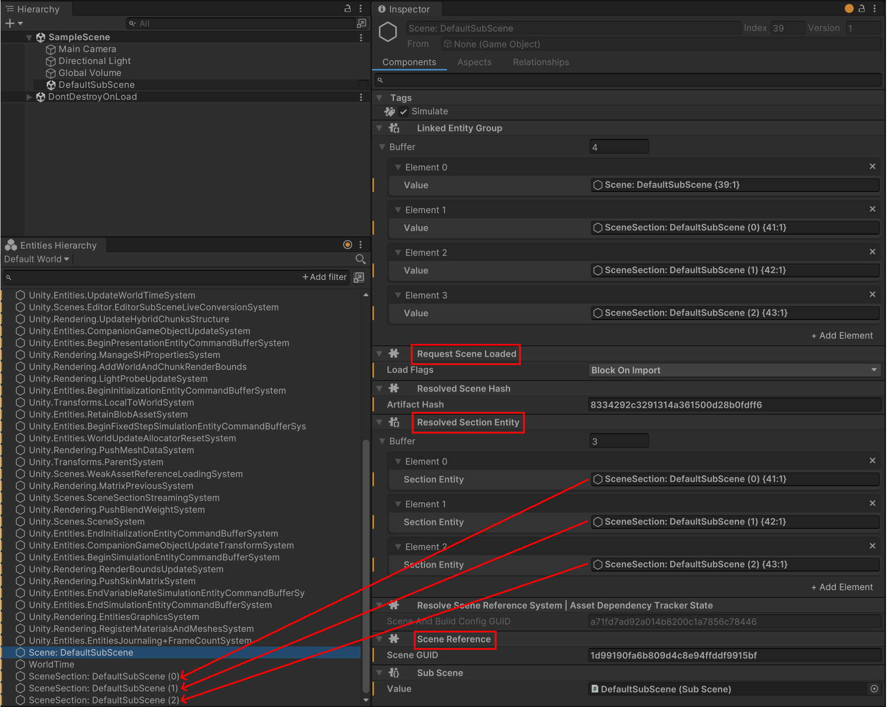
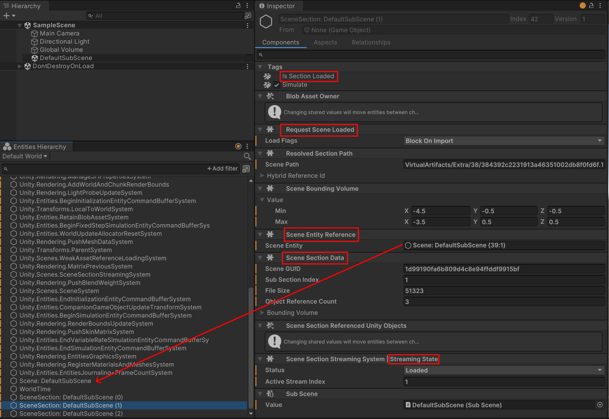
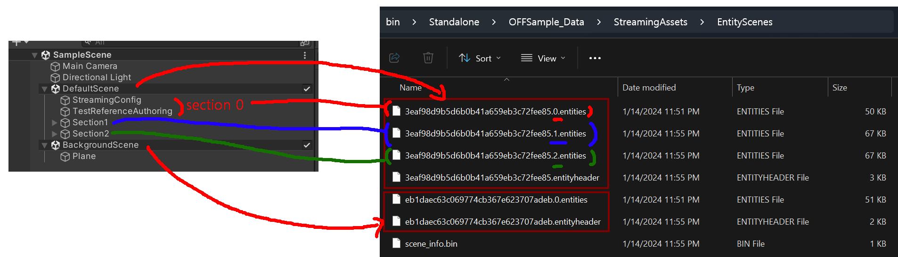

이번 글에서는 DOTS 씬 시스템의 구조와 그 구현, 특징 및 중요점을 알아본다.
이전 글(Unity DOTS : Entity Scene과 Mono Scene 비교)을 먼저 읽길 권장한다.
1. 기본 개념
1-1. Scene과 Section
씬은 오브젝트들을 논리적, 물리적 구조로 묶어 사용하는 단위이다. 하나의 씬으로 모든 것을 묶지 않고 용도나 물리적 위치등 여러가지 기준을 바탕으로 여러개의 씬으로 분리할 수 있다.
- 용도에 따라 씬을 분리하는 경우
- 플레이어와 관련된 오브젝트는 PlayerScene에,
NPC에 관련된 오브젝트는 NPCScene에,
시스템 설정에 관련된 오브젝트는 SettingsScene에 배치.
- 플레이어와 관련된 오브젝트는 PlayerScene에,
- 물리적 위치를 바탕으로 씬을 분리하는 경우
- 큰 월드를 하나의 씬으로 담지 않고, 그리드로 씬을 분할.
추가로 DOTS의 씬에는 섹션이라는 일반 유니티 씬에는 없는 새로운 개념이 있다.
섹션은 쉽게 말해서 씬 안의 씬이다. 하나의 씬 안에서 특정 기준을 가지고 섹션을 여러개로 나눠둘 수 있고, 나눠진 섹션 단위로 씬을 로드/언로드 할 수 있다.
- 섹션의 사용예 - 월드의 오브젝트를 성격에 따라 섹션으로 분리하기
- 건물을 Section 1, 나무나 풀같은 식생을 Section 2로 분리해두고,
씬과 카메라의 거리가 멀면 Section 2는 로드하지 않는다. - –> 결과적으로 LOD를 얻어낼 수 있다.
- 섹션 방식과 일반적인 LOD 시스템의 차이
- 해당 섹션의 오브젝트(식생) 자체가 메모리에서 해제된다.
일반적인 LOD 시스템은 LOD 계산도 매번 해야 하고,
대상 오브젝트도 메모리에 상주한다는 점에서 차이가 있다.
- 해당 섹션의 오브젝트(식생) 자체가 메모리에서 해제된다.
- 건물을 Section 1, 나무나 풀같은 식생을 Section 2로 분리해두고,
1-2. Scene Meta Entities
씬 시스템은 Scene Entity, Scene Section Entity - 2가지 Entity를 사용한다.
공식 문서에서는 이들을 Meta Entity라고 표현한다. Scene 자체의 내용물이 아니라 Metadata 성격을 가진 것들이라 그런 듯 하다.
1-2-1. Meta Entities의 용도
Meta Entities들은 씬의 헤더 역할을 한다. 최초에 씬을 로드할 때에는 씬 헤더 파일을 읽어서 Meta Entities들을 준비하고, 씬 본문 파일 및 Meta Entities를 조합해 씬 컨텐츠를 로드한다.
1-2-2. Meta Entities 살펴보기
아래 예시의 SampleScene에서 DefaultSubScene을 서브씬으로 사용함으로써 DOTS 씬으로 구성했다. 가운데 Entities Hierarchy 창을 보면 DOTS 씬으로 사용되고 있는 DefaultSubScene을 나타내는 몇가지 Entity를 볼 수 있다.
 Scene Entity와 Scene Section Entity 3개. 섹션마다 섹션을 나타내는 Section Entity가 생성됨.
Scene Entity를 클릭해 Inspector로 컴포넌트를 살펴보자:
 DefaultSubScene을 나타내는 Scene Entity.
Scene Entity의 주요 컴포넌트는 다음과 같다:
- RequestSceneLoaded
- 이 씬을 로드하도록 할지 말지를 나타내는 Command형태의 컴포넌트이다.
- 이 컴포넌트를 Scene Entity에 추가하면 씬 시스템이 해당 씬을 로드하고, 씬이 로드되었지만 이 컴포넌트가 제거되었다면 씬을 언로드한다.
- ResolvedSectionEntity(Dynamic Buffer)
- 이 씬의 섹션들중 준비가 된 섹션들을 버퍼(리스트)로 참조한다.
- 이 씬의 섹션들을 조회할 때 사용할 수 있다.
- SceneReference
- 대상 씬의 고유식별자를 들고 있는다. 사실상 Scene Entity임을 나타내는 기능도 한다.
그 다음 Scene Section Entity를 살펴보자:
 Scene Section Entity 3개. 섹션마다 섹션을 나타내는 Section Entity가 생성됨.
Scene Section Entity의 주요 컴포넌트는 다음과 같다:
- IsSectionLoaded
- 이 섹션이 로드되었는지를 나타내는 Tag Component(공식 문서)이다.
- RequestSceneLoaded
- Scene Entity에 추가되는 것과 같은 컴포넌트인데, 이 섹션을 로드할 것인지를 의미한다.
- 이 컴포넌트 추가/제거를 통해 섹션 단위의 로딩을 제어할 수 잇다.
- SceneEntityReference
- 섹션의 부모 Scene Entity를 참조한다.
- Section Entity로부터 씬을 Retrieve 할 수 있게 해준다.
- SceneSectionData
- 섹션의 주요 데이터를 나타낸다.
- 물리적 범위를 나타내는 Bounding Volume과 섹션 Index인 Sub Section Index를 포함한다.
- StreamingState
- 섹션의 내부적인 스트리밍(로딩) 상태를 나타낸다.
- internal이라 직접적인 제어는 안되고 씬 시스템 내부 구현을 위해 사용된다.
- 아래 유틸성 메서드 등에서 사용된다.
// SceneSystem.cs public static SceneStreamingState GetSceneStreamingState(WorldUnmanaged world, Entity entity) public static SectionStreamingState GetSectionStreamingState(WorldUnmanaged world, Entity sectionEntity)
1-2-3. Meta Entities 고급 활용법
- 씬 반만 언로딩하기
- 씬을 언로딩할 때 Meta Entities를 살려둘 수 있다.
이를 통해 나중에 다시 그 씬을 로딩할 때 Meta Entities를 읽는 작업(씬 헤더 읽기)을 생략해 빠르게 로딩할 수 있다.
// SceneSystem.cs public static void UnloadScene(WorldUnmanaged world, Entity sceneEntity, UnloadParameters unloadParams = UnloadParameters.Default) // 기본값인 UnloadParameters.Default를 사용하면 Meta Entities를 보존해 반만 언로딩된다. - 씬을 언로딩할 때 Meta Entities를 살려둘 수 있다.
- Meta Entities에 정보 달아두기
- 베이킹 시점에 Meta Entities에 컴포넌트를 추가할 수 있다.
- 이 컴포넌트를 씬이 반만 로딩/언로딩된 상태에서도 사용할 수 있다.
- 사용예로는 씬이 로딩되어야 할 조건을 달아두는게 있겠다.
Scene Entity, Scene Section Entity에 대한 이해를 통해 자유롭게 씬 시스템을 제어할 수 있다.
1-3. Scene Streaming
DOTS에서는 씬 로딩이라는 표현 이외에 씬 스트리밍이라는 표현을 추가적으로 사용한다.
(공식 문서 - Scene Streaming Overview)
실제로 진정한 의미의 Streaming을 DOTS 씬 시스템에서 달성했기에 더 의미있고, 알아볼 가치가 있다.
- 비동기, Background 로딩, 작은 처리 단위, 쓰로틀링
이것들이 내가 생각하는 스트리밍을 이뤄내는 몇가지 포인트들이다.
하나씩 알아보고 코드 레벨의 구현도 살펴보자.
비동기
씬 로딩은 비동기로 이루어진다.
로딩 함수 호출시 실행 흐름이 멈추지 않으며, 즉시 Scene Entity를 반환한다.
이 Scene Entity로 추후 로딩 상태를 조회할 수 있다.
// SceneSystem.cs
public static Entity LoadSceneAsync(WorldUnmanaged world, EntitySceneReference sceneReferenceId,
LoadParameters parameters = default)
Background 로딩
DOTS의 System들은 MonoBehaviour와 마찬가지로 유니티 메인쓰레드에서 실행되는데,
씬 시스템의 로딩 처리 많은 부분은 잡 쓰레드에서 처리되기 때문에 메인 쓰레드의 실행 흐름을 크게 방해하지 않는다. 당연히 멀티 쓰레딩의 이점까지 얻는다.
씬 파일을 로딩하는 코드 일부를 발췌했다. UpdateAsync(), ScheduleSceneRead()는 메인 쓰레드에서 호출되지만 그 안에서는 비동기 및 멀티 쓰레딩을 활용한다.
// AsyncLoadSceneOperation.cs
unsafe struct DeserializeHeaderJob : IJob { ... }
class AsyncLoadSceneOperation
{
unsafe struct FreeJob : IJob { ... }
struct AsyncLoadSceneJob : IJob { ... }
ReadHandle _ReadHandle;
void UpdateAsync()
{
...
_ReadHandle = SerializeUtility.BeginDeserializeWorld(...);
// 파일을 읽고 DOTS 형식으로 Deserialize 하는 작업, 비동기
...
}
void ScheduleSceneRead()
{
...
var loadJobHandle = new AsyncLoadSceneJob { ... }.Schedule(
JobHandle.CombineDependencies(..., _ReadHandle.JobHandle)
);
var freeJob = new FreeJob { ... };
freeJob.Schedule(loadJobHandle);
// FreeJob과 AsyncLoadSceneJob이 Schedule()을 통해 Job Thread에서의 실행을 예약한다.
}
}
작은 처리 단위
씬 로딩은 크게 3가지 처리로 분류해볼 수 있다 : 씬 파일 Read와 Deserialization, *Move Entities 이다.
DOTS 씬 시스템은 섹션 단위로 파일을 분리하며 이 파일 단위로 읽기 및 역직렬화를 수행하기 때문에 적절히 씬 및 섹션 분할을 해뒀다면 한번에 처리하는 작업 단위가 크지 않다.
작업 단위가 작을수록 스케일링에 용이하고 프로그램의 반응성이 좋으며 렉처럼 보이는 Hitching이 최소화된다.
쉽게 말해 처리 단위가 작음으로써 렉이 덜 발생하고 안정적인 프레임을 얻어낼 수 있다.
*Move Entities: 씬을 로딩할 때 로딩용 World를 별도로 만들어서 거기에 먼저 로딩하고, 완료되면 원래 World에 로딩용 World의 청크를 복사해옴으로써 옮겨온다. SceneSectionStreamingSystem.MoveEntities() 참조.
쓰로틀링
씬 여러개를 동시에 로딩 요청하더라도 내부적으로 동시 로딩 씬 개수, 프레임당 최대 Stream-In 개수등을 바탕으로 처리량을 조절한다. 이를 통해 순간적인 부하를 막고 개발자가 원하는대로 쓰로틀링을 할 수 있고, 결과적으로 원활한 프로그램 실행을 돕는다.
// SceneSetionStreamingSystem.cs
public int ConcurrentSectionStreamCount { get; set; }
public int MaximumWorldsMovedPerUpdate { get; set; }
public int MaximumSectionsUnloadedPerUpdate { get; set; }
내가 생각하는 스트리밍의 관건은 렉없이 부드럽게 시스템이 돌아가는 것이라
4가지 관점 모두 실행 흐름에 중점을 두었다.
2. 빌드 결과물 살펴보기
2-1. Section 별 파일 저장

왼쪽 씬 하이어라키를 보면 SampleScene이라는 이름의 메인씬에 DefaultScene, BackgroundScene 2개의 서브씬이 추가되어 있다. DefaultScene에는 0, 1, 2 섹션으로 나뉘어 있다.
Player 빌드하면 *_Data/StreamingAssets/EntityScenes 폴더에서 DOTS 씬들을 찾아볼 수 있다. 이름이 scene guid로 시작하는데, 이 값을 확인하려면 .unity.meta를 열어 guid를 확인해보면 된다.
DefaultScene.unity.meta
guid: 3eaf98d9b5d6b0b41a659eb3c72fee85
BackgroundScene.unity.meta
guid: eb1daec63c069774cb367e623707adeb
작은 처리 단위섹션에서 언급한 것처럼 오른쪽 폴더에 보면
- 3eaf98d9b5d6b0b41a659eb3c72fee85.
0.entities - 3eaf98d9b5d6b0b41a659eb3c72fee85.
1.entities - 3eaf98d9b5d6b0b41a659eb3c72fee85.
2.entities
3가지 파일이 있다. 이는 각각 Scene Section별로 씬 파일이 분리된 것이다.
빌드 결과로 아래 파일들이 나오는 것은 확인했고, 실제 대응되는 C# 구조체(클래스) 혹은 관련 메서드를 찾아보자.
2-2. 파일과 연관된 코드
-
*.entities
// SerializeUtility.cs internal unsafe struct WorldDeserializationStatus { internal UnsafeList<MegaChunkInfo> MegaChunkInfoList; public DotsSerializationReader.NodeHandle.PrefetchState ArchetypePrefetchState; [NativeDisableUnsafePtrRestriction] public void* BlobAssetBuffer; public int BlobAssetSize; public DotsSerializationReader.NodeHandle.PrefetchState SharedComponentPrefetchState; public DotsSerializationReader.NodeHandle.PrefetchState EnabledBitsPrefetchState; public DotsSerializationReader.NodeHandle.PrefetchState BufferElementPrefetchState; public DotsSerializationReader.NodeHandle.PrefetchState PrefabPrefetchState; public int TotalChunkCount; ... }- 씬 파일을 역직렬화하기 위한 데이터 조각들. Chunk, Archetype, SharedComponent등 여러 데이터 들을 조합해 씬을 저장하고 불러오는 것을 볼 수 있다.
-
*.entityheader
// SceneHeaderUtility.cs internal unsafe struct HeaderLoadResult : IDisposable { public HeaderLoadStatus Status; public UnsafeList<ResolvedSectionPath> SectionPaths; public BlobAssetReference<SceneMetaData> SceneMetaData; public BlobAssetOwner HeaderBlobOwner; ... }- 씬 헤더 파일을 역직렬화하기 위한 데이터 조각들. 씬 파일의 경로, - Scene Meta Entities를 구성하기 위한 바이너리 데이터가 있다.
-
scene_info.bin
// ResourceCatalogData.cs public struct ResourceCatalogData { ... public BlobArray<ResourceMetaData> resources; public BlobArray<BlobString> paths; public Hash128 GetGUIDFromPath(string path){...} public string GetPathFromGUID(Hash128 guid){...} ... }- resources와 paths 배열의 각 index가 같은 대상을 가리킨다.
- -> guid <-> path 양방향 변환이 가능하다.
SceneSystem.LoadAsync(guid)메서드 내부에서 guid를 실제 씬 파일 경로로 resolve하는 과정에서 사용된다.